あなたのMacを、どこでも鮮明に
フルカラーの映像と、画面にぴったりのディスプレイを、iPad、iPhone、iPhone Duoで。まるでMacの前に座っているように使えます。

€4.99の買い切り。アカウント不要、広告なし。
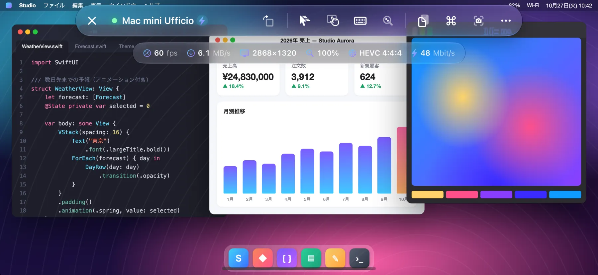
- 60 fps
- HEVC 4:4:4
- Retina
しくみ
Open Remote PROは、macOSに組み込まれた画面共有に接続します。Apple Remote Desktopと同じ仕組みです。
- Macへのインストールは不要
- アカウントも不要
- データが外部のサーバーを経由しません
フルカラーで、60 fpsのなめらかさ
フルカラーのHEVC 4:4:4ビデオをハードウェアでデコード。文字はMacの画面と同じくらい鮮明で、グラデーションや写真にもにじみが出ません。スクロールも、ウインドウのドラッグも、ビデオの再生も、最大60 fps、低遅延でなめらかです。
Macがビデオモードに対応していない場合は、自動的に従来のVNCエンコーディングに切り替わります。
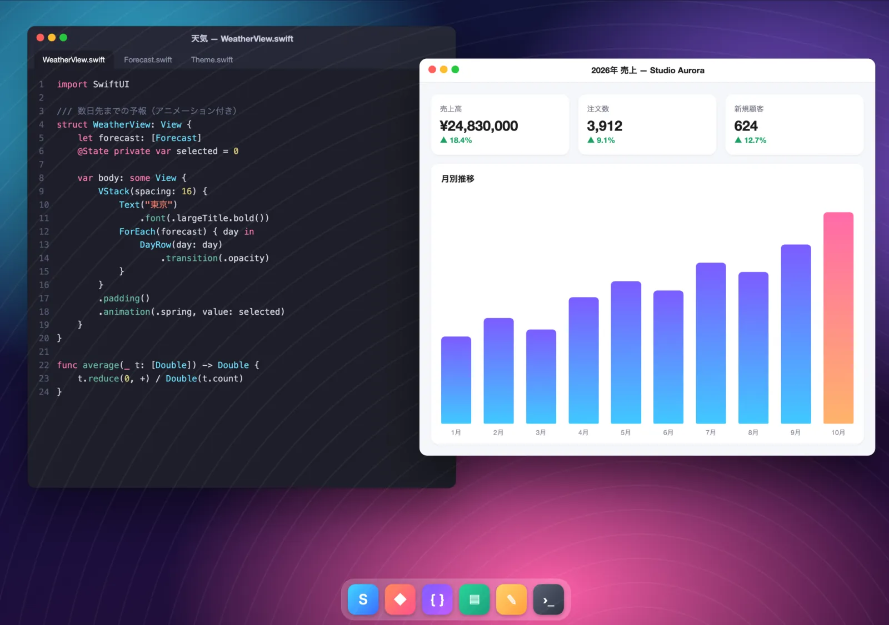
画面があなたに合わせる
Macがあなたの画面とまったく同じサイズのRetina仮想モニタを作成します。黒い帯も、小さすぎる文字もありません。デバイスを回転しても、Split Viewやステージマネージャを使っても、iPhone Duoを開いても、モニタのサイズが自動で変わります。
- キーボードを表示しているときは、2本指でスワイプして隠れた部分を見るか、Macの画面を見えている範囲に縮小するかを選べます。
- iPhoneでは、画面の向きのロックがオンでもボタンひとつで画面を回転できます。
- 複数のディスプレイを使うMacでは、タップで切り替えたり、すべてをまとめて表示したりできます。
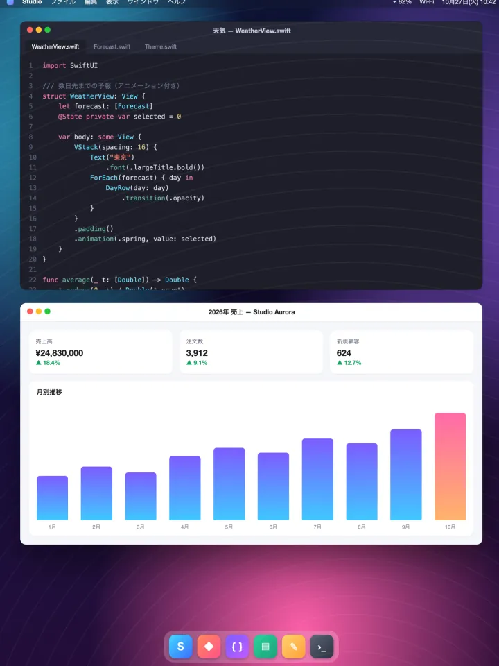
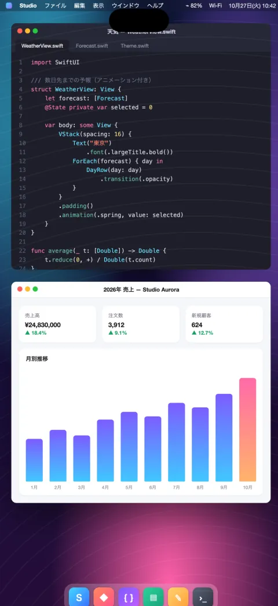
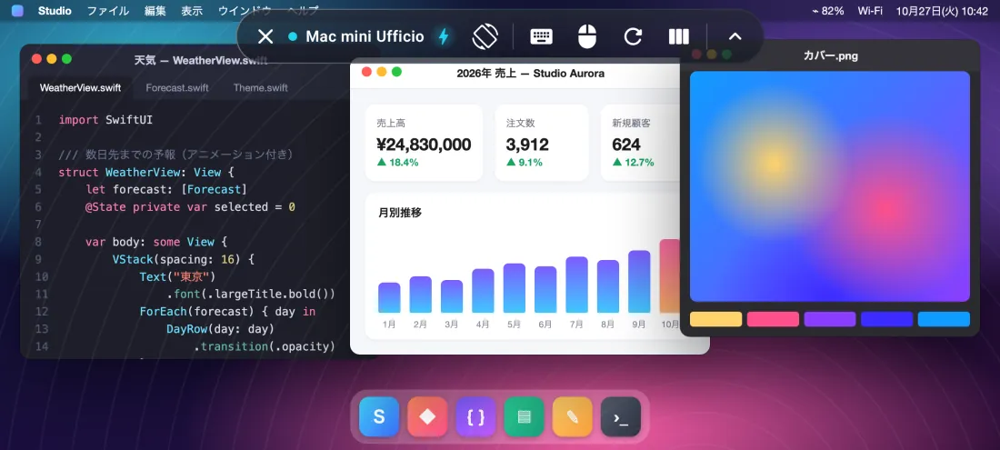
iPhone Duoに最適化
iPhoneを開けばMacの画面も一緒に広がり、閉じれば外側のディスプレイにぴったり合わせます。
閉じているときは、Macが外側のディスプレイに合わせて表示されます。 開くと、ノートパソコンのような広さの7.6インチのデスクトップになります。
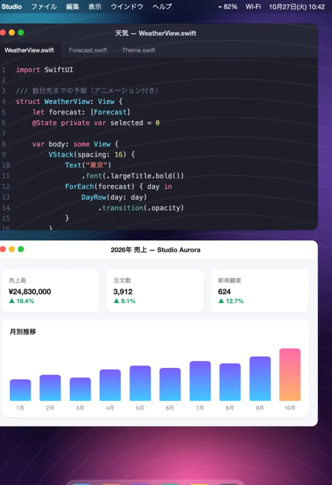
- 開閉したその瞬間にMacの仮想モニタのサイズが切り替わります。再接続も黒い帯もありません。
- コントロールバーは外側と内側のディスプレイに合わせて自動で配置が変わります。
- 画面を回転するボタンもあり、iPhoneを横にすると回転を提案します。
マウス、トラックパッド、キーボード
BluetoothやUSBのマウス、トラックパッド、キーボードに完全対応。Magic Keyboard、Magic Trackpad、Magic Mouseも使えます。
- ポインタの移動とホバーに対応し、Macと同じ感覚で操作できます。
- 左クリックと右クリック。
- トラックパッドの2本指スクロールと、マウスホイールによるスクロール（なめらかに、または1段ずつ）。
- 物理キーボードは正しい配列で入力でき、アクセント付きの文字や記号も正しく届きます。
- 修飾キー ⌘ ⌥ ⌃ ⇧。
マウスとトラックパッド：iPadで利用できます。物理キーボード：iPadとiPhoneで利用できます。
お使いのキーボードで ⌘、⌥、⌃、⇧ を押してみてください。
すべてのMacをひと目で
自宅、スタジオ、オフィスで、複数のMacを管理する人のために。
- Apple Remote Desktopを使っていますか？ Remote Desktopから書き出したコンピュータのリストをすぐに読み込めます。
- 各Macの最新の画面と、リアルタイムの状態（利用可能／接続不可）をカードで表示。
- ローカルネットワーク上のMacを自動で検出し、アドレスを入力してクイック接続。
- SSHによるリモート管理：ハードウェア、システムとディスク、インストール済みのApp、画面のロック、スリープ、再起動、システム終了。Macの本人確認も行います。
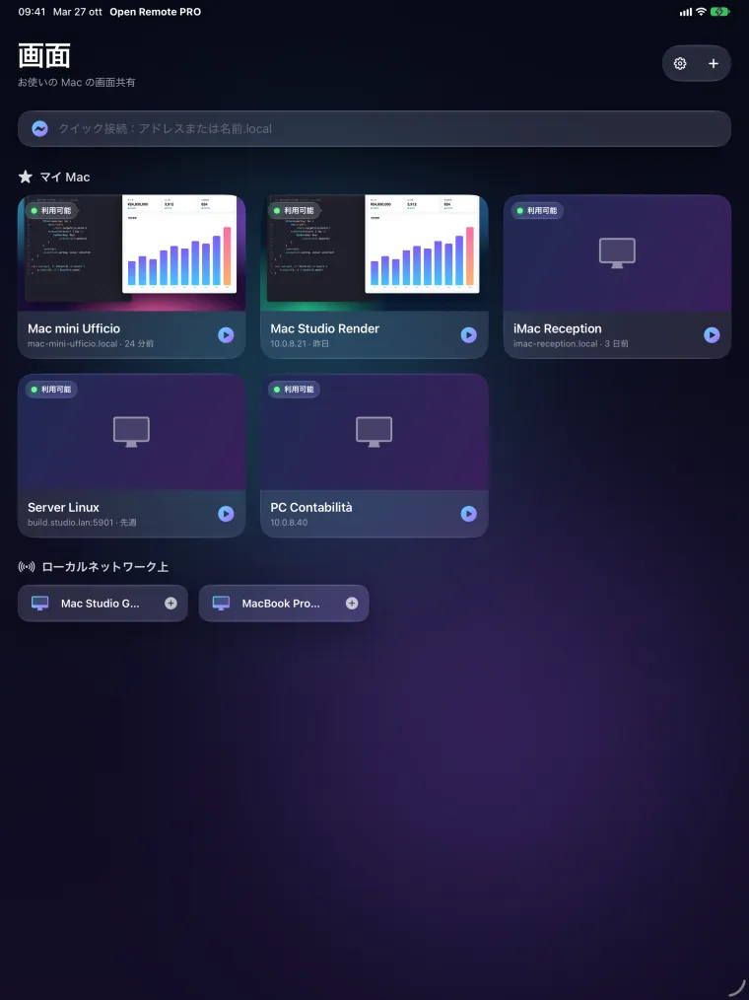
操作、互換性、プライバシー
自然な操作
- トラックパッドモードとダイレクトタッチ、2本指で副ボタンのクリック、なめらかなピンチズーム。
- 慣性付きの正確なスクロール。3本指でページをスクロール。
- esc、tab、矢印キー、F1〜F12、修飾キーを備えたバー。Mission Control、Spotlight、スナップショットなどのショートカットもすぐに使えます。
- Macとデバイスの間でクリップボードを共有。画面のスナップショットを保存したり共有したりできます。
- 何も操作せずに画面を見るだけの観察モード。
PCやLinuxにも
- WindowsやLinuxの標準的なVNCサーバー。
- iPadとiPhoneでは、リモートデスクトップ（RDP）でWindows PCにも接続できます。
Android版はGoogle Playで近日公開
Androidのスマートフォン、折りたたみ端末、タブレットで。最大60 fpsでなめらか（対応ディスプレイでは最大120 fps）。
設計段階からプライバシーを重視
- アカウント不要、広告なし、トラッキングなし。
- パスワードと鍵はデバイスのキーチェーンに保存されます。
- Appが接続するのは、あなたが指定したコンピュータだけです。
スクリーンショット
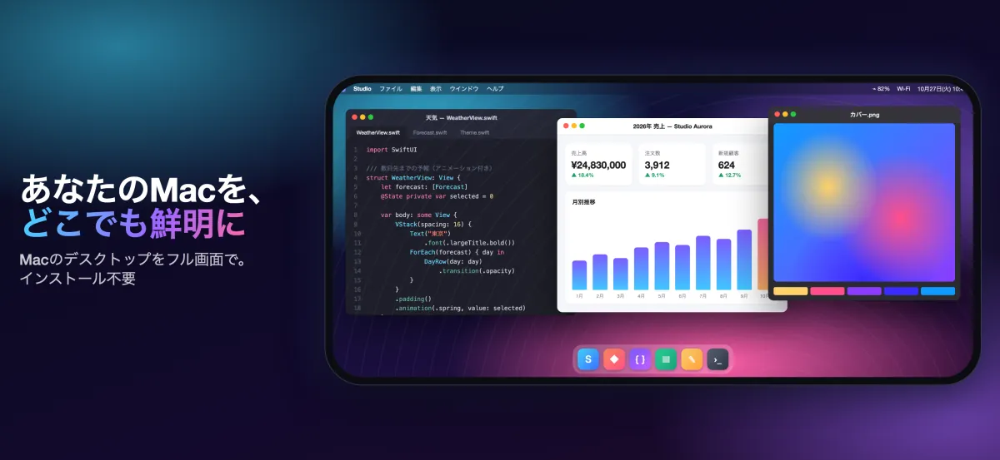
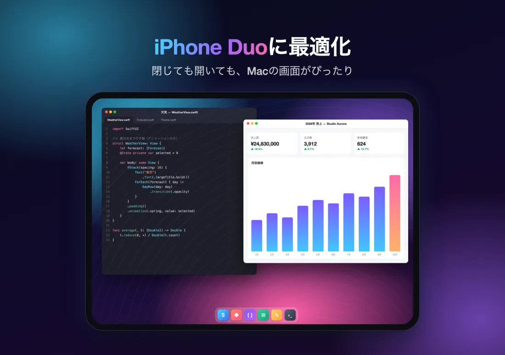
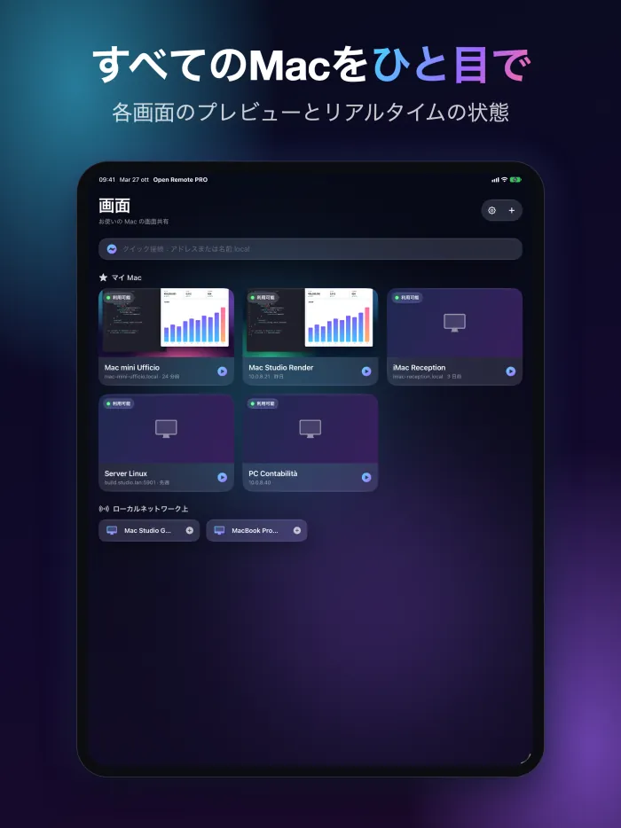
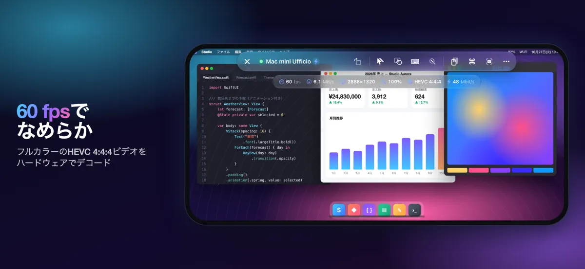
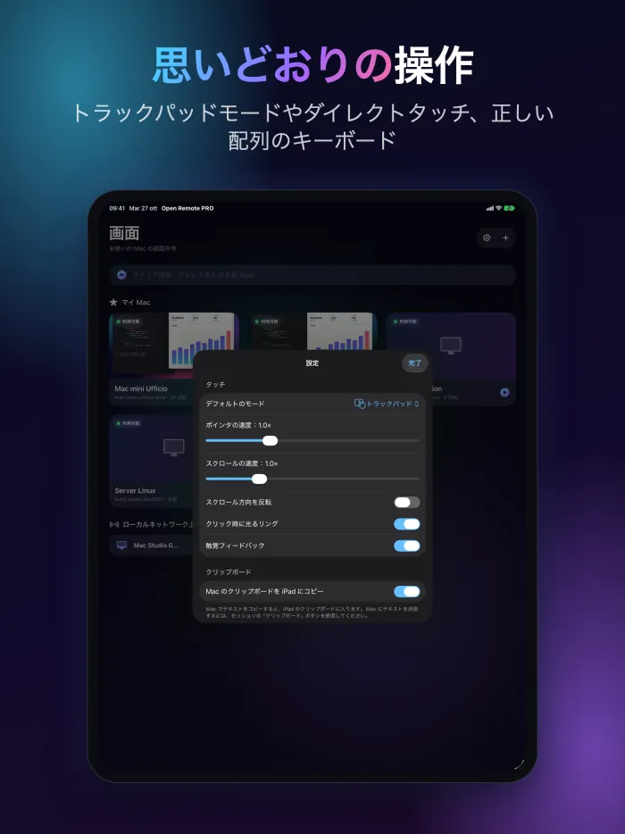
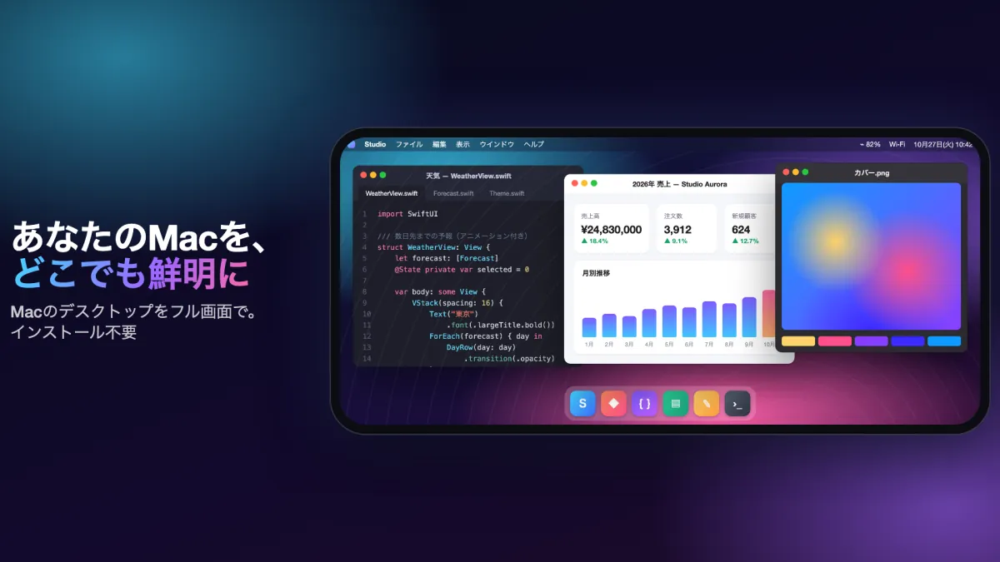
一度の購入で
€4.99
App Storeで一度お支払いいただくだけです。
ユーロ圏での価格です。その他の地域ではApp Storeに表示される価格が適用されます。
必要条件
高画質ビデオを使うには、Appleシリコンを搭載し、macOS 14以降を実行しているMacで、画面共有をオンにする必要があります（システム設定 › 一般 › 共有）。そのほかのMacやVNCサーバーは従来のエンコーディングで動作します。自宅やオフィスの外からはVPNを使用してください。
よくある質問
Macに何をインストールすればいいですか？
何も必要ありません。Macで「システム設定 › 一般 › 共有」を開き、画面共有をオンにします。あとはAppでMacを追加し（同じネットワーク上にあれば、すでにリストに表示されます）、そのMacのユーザ名とパスワードでログインします。
高画質ビデオには何が必要ですか？
Appleシリコンを搭載し、macOS 14以降を実行しているMacが必要です。そのほかのMacやVNCサーバーは従来のエンコーディングで動作します。
自宅の外からも使えますか？
はい。MacのネットワークへのVPNを使用してください。画面共有をインターネットに直接公開しないでください。
WindowsやLinuxのPCでも使えますか？
はい。WindowsやLinuxの標準的なVNCサーバーに接続できます。iPadとiPhoneでは、リモートデスクトップ（RDP）でWindows PCにも接続できます。
Appはどんなデータを収集しますか？
何も収集しません。アカウント、広告、トラッキングはありません。コンピュータのリスト、パスワード、鍵はデバイスに保存され、Appが接続するのはあなたが指定したコンピュータだけです。
Android版はいつ公開されますか？
Android版は近日中にGoogle Playで公開予定です。スマートフォン、折りたたみ端末、タブレットに対応します。
そのほかの回答はサポートページ（英語）をご覧ください。